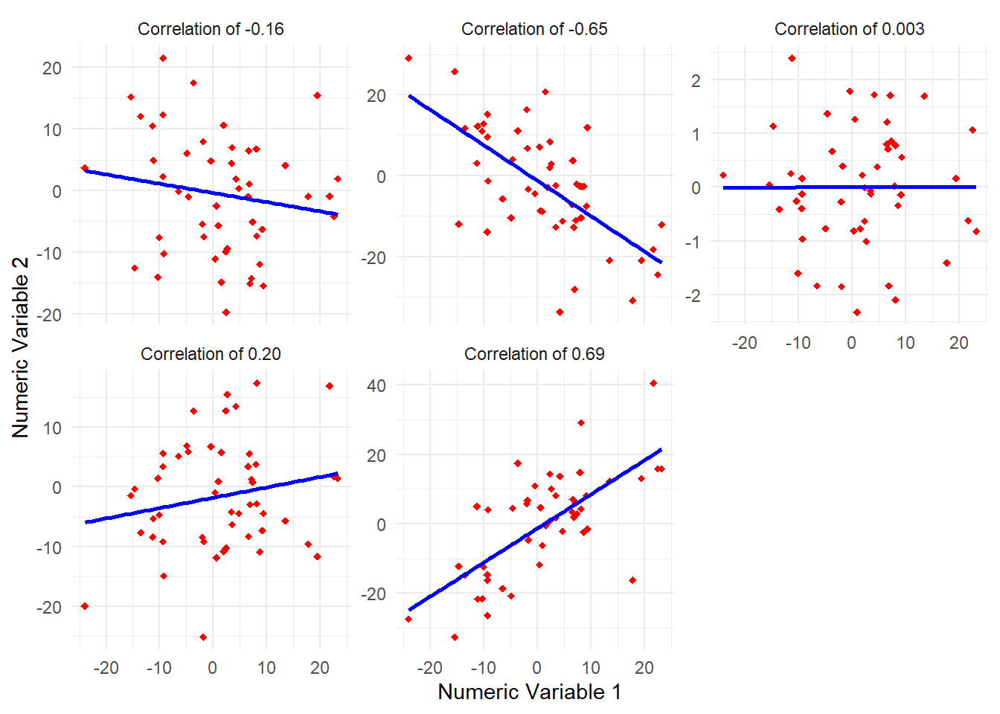
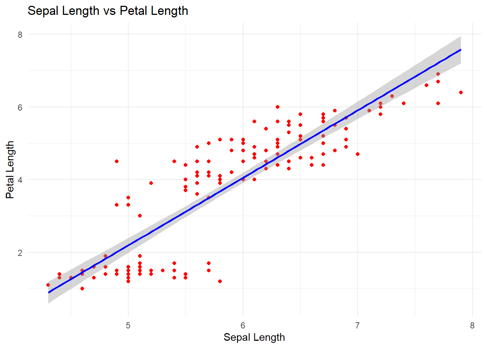
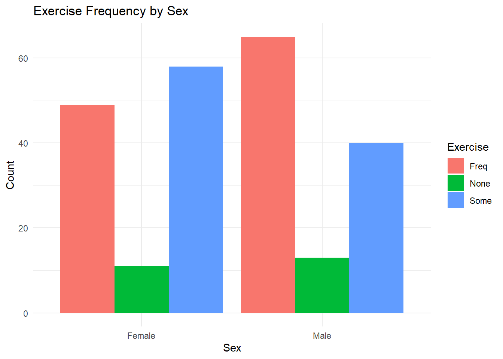
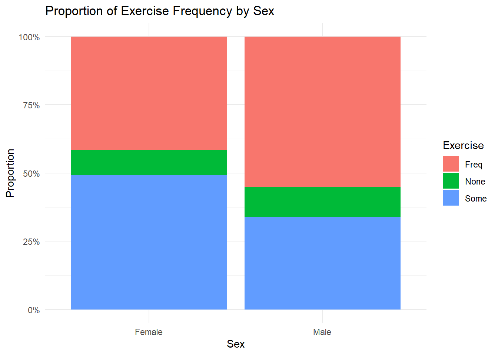
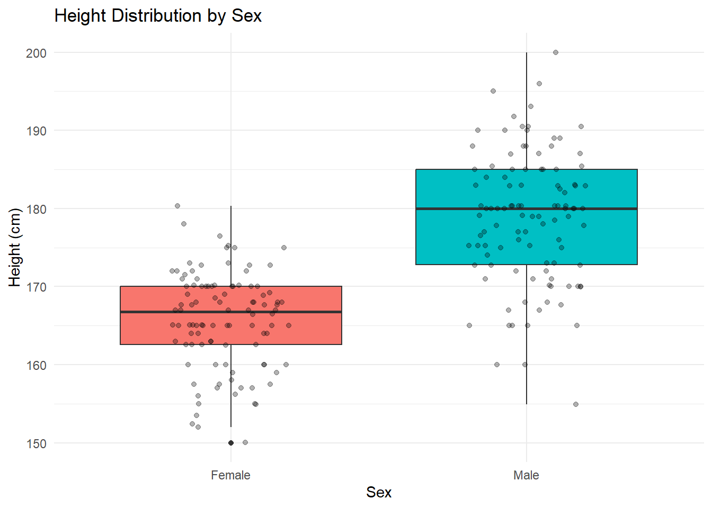
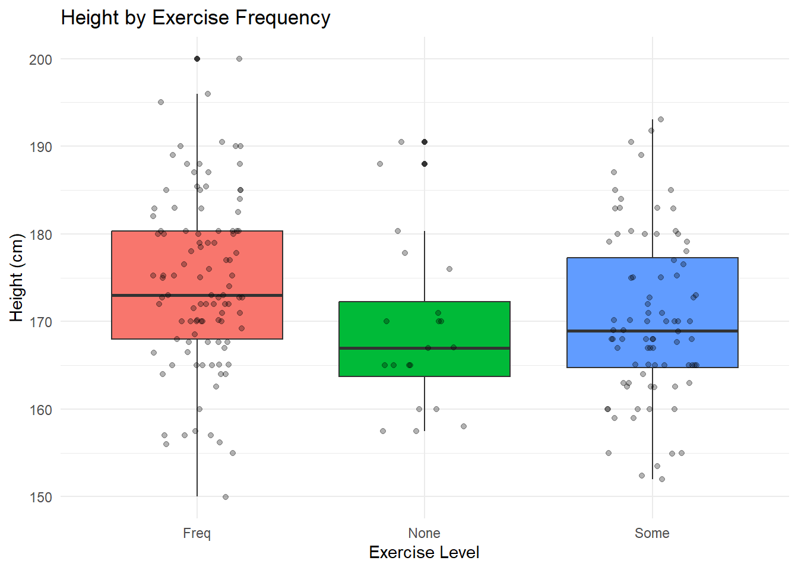

13 Relationships Between Variables
Now we are getting to the good stuff. Analyzing one variable at a time is like judging a basketball player by their height alone — useful, but you are missing the whole picture. The real magic of data analysis happens when you start asking “how do these variables relate to each other?” This is where you go from describing your data to actually understanding it, and it is where the questions that keep business leaders up at night finally get answers:
- Does higher marketing spend actually lead to more sales, or are we just throwing money into the void? (Correlation)
- Do male and female employees earn different salaries? (t-test)
- Does customer satisfaction differ across our three service tiers? (ANOVA)
- Is there a relationship between customer region and product preference? (Chi-square test of independence)
This chapter covers bivariate and multivariate analysis — fancy words for “looking at two or more variables at the same time and seeing what shakes out.” We use visualizations throughout. For the full ggplot2 experience, see Chapters 10 and 11.
13.1 Between continuous variables: Correlations
Correlation is the workhorse of “do these two things move together?” It produces a single number between -1 and +1 that tells you the strength and direction of a linear relationship. Here is the cheat sheet:
- +1 = perfect positive relationship. When one goes up, the other goes up in lockstep. (Think: hours studied and exam scores.)
- -1 = perfect negative relationship. When one goes up, the other goes down like a seesaw. (Think: price of a product and quantity demanded — Econ 101 vibes.)
- 0 = no linear relationship whatsoever. These two variables could not care less about each other. (Think: your shoe size and your GPA.)
In business, correlations are everywhere. A marketing analyst might correlate ad spend with website traffic. An operations manager might correlate warehouse staffing levels with order fulfillment speed. A finance analyst might correlate interest rates with loan applications. The correlation coefficient gives you a quick read on whether two things are related — and how strongly — before you invest time in deeper analysis.
Here is a rough guide for interpreting correlation strength (these are rules of thumb, not hard boundaries):
| Absolute Value of r | Interpretation |
|---|---|
| 0.00 – 0.19 | Very weak |
| 0.20 – 0.39 | Weak |
| 0.40 – 0.59 | Moderate |
| 0.60 – 0.79 | Strong |
| 0.80 – 1.00 | Very strong |
And one critical warning you will hear a hundred times in your career: correlation does not imply causation. Just because two things move together does not mean one causes the other. Ice cream sales and drowning deaths are positively correlated — not because ice cream is dangerous, but because both go up in the summer. Always think about whether a lurking third variable (a “confound”) could be driving both.
13.1.1 Plotting
The best way to start is with scatterplots. Below are several examples showing what different correlation values actually look like in practice. Notice how the dots cluster tighter around the blue line as the correlation gets stronger (closer to -1 or +1), and scatter into a shapeless cloud as it approaches 0. A correlation of 0.003 is basically “I drew dots at random and drew a line through them for fun”:

Look at how the visual pattern changes as the correlation number changes. At -0.65, the points form a clear downward-sloping cloud — when one variable goes up, the other tends to go down. At -0.16 and 0.20, the relationship is so weak that you can barely see a trend; the dots look almost random. At 0.003, there is literally no pattern — the blue line is nearly flat. At 0.69, a strong upward trend re-emerges. These panels give you visual intuition for what the numbers mean in practice.
13.1.2 Correlations between two numeric variables
Before running a correlation, there are a few assumptions to keep in mind: the variables should be on an interval or ratio scale (so, actual numbers — not categories), the relationship between them should be roughly linear (not curved like a roller coaster), extreme outliers should not be hijacking the result, and ideally both variables are approximately normally distributed. Do not lose sleep over these for now, but keep them in the back of your mind like a mental sticky note.
Let us plot Sepal.Length against Petal.Length. In a business context, think of this as plotting “years of experience” against “salary” or “social media followers” against “monthly revenue.”
ggplot(iris, aes(x = Sepal.Length, y = Petal.Length)) +
geom_point(color = "red") +
geom_smooth(method = "lm", se = TRUE, color = "blue") +
labs(x = "Sepal Length", y = "Petal Length",
title = "Sepal Length vs Petal Length") +
theme_minimal()
The scatterplot shows a clear positive relationship — as Sepal.Length increases, Petal.Length tends to increase as well. The blue regression line (also called a “line of best fit”) is the straight line that comes closest to all the data points; it summarizes the overall trend in one stroke. The gray band around it is a confidence band — it shows the range of uncertainty around the line. A narrow band (like this one) means the trend is reliable; a wide band means more uncertainty. In business terms, if these were “years of experience” and “salary,” you would see that more experience is strongly associated with higher pay.
We can color by species to reveal group structure — and this is a genuinely important technique. Sometimes the overall trend masks completely different patterns within subgroups. Imagine overall company revenue is flat, but when you break it down, the East region is booming while the West is tanking. The aggregate number hid the real story. Same idea here.
This matters beyond iris flowers. Aggregate numbers can mask real disparities — in pay, in health outcomes, in loan approval rates. Disaggregating by demographic group is how you find out whether a system that looks fair on average is actually working for everyone. The Jesuit commitment to solidarity with the marginalized starts, in data work, with something deceptively simple: looking at the right level of detail.
p_species <- ggplot(iris, aes(x = Sepal.Length, y = Petal.Length, color = Species)) +
geom_point() +
geom_smooth(method = "lm", se = FALSE) +
labs(x = "Sepal Length", y = "Petal Length",
title = "Sepal Length vs Petal Length by Species") +
theme_minimal()
ggplotly(p_species)Hover over any point to see its exact measurements and species. Interactive charts like this are useful when you want to identify specific data points — something static plots cannot do. Try clicking a species name in the legend to show or hide that group.
Now let us put an actual number on it. The Pearson correlation coefficient:
cor(iris$Sepal.Length,iris$Petal.Length)
#> [1] 0.8717538The result is approximately 0.87 — a very strong positive correlation (refer to the table above). This means that as Sepal.Length increases, Petal.Length almost always increases too, and the relationship is tight. In business terms, if these two variables were “marketing spend” and “revenue,” a correlation of 0.87 would make the marketing team very happy.
But here is the question that separates a good analyst from a great one: is it statistically significant, or could we have gotten a number like this purely by chance? The cor.test() function answers that. Testing whether the observed correlation coefficient is different from 0:
cor.test(iris$Sepal.Length,iris$Petal.Length)
#>
#> Pearson's product-moment correlation
#>
#> data: iris$Sepal.Length and iris$Petal.Length
#> t = 21.646, df = 148, p-value < 2.2e-16
#> alternative hypothesis: true correlation is not equal to 0
#> 95 percent confidence interval:
#> 0.8270363 0.9055080
#> sample estimates:
#> cor
#> 0.8717538How to read this output:
- t = 21.646: The test statistic. It measures how many standard errors the observed correlation is away from zero. A t-value this large is overwhelming evidence.
- df = 148: Degrees of freedom (sample size minus 2 for a correlation test).
- p-value < 2.2e-16: Essentially zero. If there truly were no relationship between these variables, the chance of observing a correlation this strong is astronomically small. We reject the null hypothesis that the correlation is zero.
- 95 percent confidence interval: 0.827 to 0.906: We are 95% confident the true population correlation falls in this range. The entire interval is above 0.8, confirming a very strong relationship.
- sample estimate (cor = 0.872): The correlation coefficient we computed.
We can also do a one-sided test — testing whether the correlation is greater than 0. This is useful when you already have a directional hypothesis going in, like “I expect ad spend and revenue to be positively correlated” (if they were negatively correlated, your marketing department has some explaining to do):
cor.test(iris$Sepal.Length,iris$Petal.Length,alternative = "greater")
#>
#> Pearson's product-moment correlation
#>
#> data: iris$Sepal.Length and iris$Petal.Length
#> t = 21.646, df = 148, p-value < 2.2e-16
#> alternative hypothesis: true correlation is greater than 0
#> 95 percent confidence interval:
#> 0.8350748 1.0000000
#> sample estimates:
#> cor
#> 0.8717538The one-sided test gives an even smaller p-value and a 95% confidence interval that starts at 0.836. The conclusion is the same: this is a strong, statistically significant positive relationship.
13.1.3 Paired Samples - comparing two-means
Sometimes you want to compare two measurements taken on the same subjects. This is the classic “before and after” scenario, and it shows up everywhere in business. Did the training program actually improve test scores? Did the website redesign change time-on-page? Did the new pricing strategy affect average basket size? The key word here is same subjects, measured twice.
In our data, we have measurements of writing-hand span and non-writing-hand span for the same students. Think of this as comparing an employee’s performance review score before and after a development program — same people, two time points:
load("data/survey.Rda")
summary(survey[,c(2,3)])
#> Wr.Hnd NW.Hnd
#> Min. :13.00 Min. :12.50
#> 1st Qu.:17.50 1st Qu.:17.50
#> Median :18.50 Median :18.50
#> Mean :18.67 Mean :18.58
#> 3rd Qu.:19.80 3rd Qu.:19.73
#> Max. :23.20 Max. :23.50
#> NA's :1 NA's :1The summary() output shows the min, median, mean, and max for each hand span, along with the count of missing values. Both hand spans have similar means (around 18.7 cm), but we need a formal test to determine if the small difference is real or just noise.
A paired t-test checks whether the average difference between the two measurements is statistically significant. It is smarter than just comparing two separate groups because it accounts for person-to-person variability:
t.test(survey$Wr.Hnd,survey$NW.Hnd,paired = TRUE)
#>
#> Paired t-test
#>
#> data: survey$Wr.Hnd and survey$NW.Hnd
#> t = 2.1268, df = 235, p-value = 0.03448
#> alternative hypothesis: true mean difference is not equal to 0
#> 95 percent confidence interval:
#> 0.006367389 0.166513967
#> sample estimates:
#> mean difference
#> 0.08644068How to read this output:
- t = 0.948: The test statistic. It measures the average difference between writing-hand and non-writing-hand span, scaled by the variability of those differences. A t-value close to zero (like 0.95) suggests the difference is small relative to the noise.
- df = 235: Degrees of freedom (number of complete pairs minus 1).
- p-value = 0.344: This is well above .05. We fail to reject the null hypothesis — there is no statistically significant difference between writing-hand and non-writing-hand spans.
- 95 percent confidence interval: -0.055 to 0.157: The interval includes zero, which is consistent with the high p-value. If zero is inside the CI, the difference could plausibly be zero.
- mean difference = 0.051: The average difference between the two measurements. It is tiny — about half a millimeter.
Bottom line: writing-hand and non-writing-hand spans are essentially the same. In a business context, if this were a “before and after” test of a training program, this result would mean the program had no measurable effect.
13.1.4 Relationships between more than two numeric variables
When you have a bunch of numeric variables and you want to see all their pairwise relationships at once, a correlation matrix is your best friend. It is the “at-a-glance” table that lets you quickly spot which pairs of variables are strongly related. In a business setting, you might run this on metrics like revenue, profit margin, customer count, marketing spend, and employee count to see which ones move together:
cor(iris[,1:4])
#> Sepal.Length Sepal.Width Petal.Length Petal.Width
#> Sepal.Length 1.0000000 -0.1175698 0.8717538 0.8179411
#> Sepal.Width -0.1175698 1.0000000 -0.4284401 -0.3661259
#> Petal.Length 0.8717538 -0.4284401 1.0000000 0.9628654
#> Petal.Width 0.8179411 -0.3661259 0.9628654 1.0000000Reading the correlation matrix: Each cell shows the Pearson correlation between two variables. The diagonal is always 1.00 (every variable is perfectly correlated with itself). The matrix is symmetric — the value in row 1, column 3 is the same as row 3, column 1. Scan for the largest absolute values to find the strongest relationships. Here, Petal.Length and Petal.Width have a very strong correlation (about 0.96), and Sepal.Length and Petal.Length are also very strong (0.87). Sepal.Width has weak or negative correlations with the other variables — it marches to its own beat.
A correlation matrix is great, but how do you know which of those numbers are statistically significant versus just noise? The rcorr() function from the Hmisc package gives you the correlation coefficients and their p-values side by side. This is the “show me the receipts” version — essential when you need to back up your findings in a report:
# Correlations with significance levels
library(Hmisc)
rcorr(as.matrix(iris[,1:4]), type="pearson") # type can be pearson or spearman
#> Sepal.Length Sepal.Width Petal.Length Petal.Width
#> Sepal.Length 1.00 -0.12 0.87 0.82
#> Sepal.Width -0.12 1.00 -0.43 -0.37
#> Petal.Length 0.87 -0.43 1.00 0.96
#> Petal.Width 0.82 -0.37 0.96 1.00
#>
#> n= 150
#>
#>
#> P
#> Sepal.Length Sepal.Width Petal.Length Petal.Width
#> Sepal.Length 0.1519 0.0000 0.0000
#> Sepal.Width 0.1519 0.0000 0.0000
#> Petal.Length 0.0000 0.0000 0.0000
#> Petal.Width 0.0000 0.0000 0.0000Reading this output: The rcorr() function prints three tables. The first table shows the correlation coefficients (same as before). The second shows the sample size (n) for each pair — typically the same for all pairs unless there are missing values. The third table shows p-values. A p-value of 0 (or very close to it) means the correlation is statistically significant. Here, almost all pairwise correlations are significant. The one exception to watch for is Sepal.Width with other variables — the correlations are weaker, and you should check whether the p-values still clear your significance threshold.
13.2 Relationships between factor variables
When both your variables are categorical — think “customer region” and “product preference,” or “department” and “preferred communication channel” — you cannot compute a correlation. (You cannot take the average of “Northeast” and “Midwest.” Well, you can try, but R will not be happy about it.) Instead, you use cross-tabulations and the chi-square test of independence to figure out whether the two categories are related or just doing their own thing.
Let us use the survey dataset and focus on the Sex and Exer (exercise frequency) variables. In a business context, this is exactly the kind of analysis you would do to determine whether customer demographics (gender, age group, income bracket) are related to behavioral variables (purchase channel, product preference, loyalty program participation).
str(survey)
#> 'data.frame': 237 obs. of 12 variables:
#> $ Sex : Factor w/ 2 levels "Female","Male": 1 2 2 2 2 1 2 1 2 2 ...
#> $ Wr.Hnd: num 18.5 19.5 18 18.8 20 18 17.7 17 20 18.5 ...
#> $ NW.Hnd: num 18 20.5 13.3 18.9 20 17.7 17.7 17.3 19.5 18.5 ...
#> $ W.Hnd : Factor w/ 2 levels "Left","Right": 2 1 2 2 2 2 2 2 2 2 ...
#> $ Fold : Factor w/ 3 levels "L on R","Neither",..: 3 3 1 3 2 1 1 3 3 3 ...
#> $ Pulse : int 92 104 87 NA 35 64 83 74 72 90 ...
#> $ Clap : Factor w/ 3 levels "Left","Neither",..: 1 1 2 2 3 3 3 3 3 3 ...
#> $ Exer : Factor w/ 3 levels "Freq","None",..: 3 2 2 2 3 3 1 1 3 3 ...
#> $ Smoke : Factor w/ 4 levels "Heavy","Never",..: 2 4 3 2 2 2 2 2 2 2 ...
#> $ Height: num 173 178 NA 160 165 ...
#> $ M.I : Factor w/ 2 levels "Imperial","Metric": 2 1 NA 2 2 1 1 2 2 2 ...
#> $ Age : num 18.2 17.6 16.9 20.3 23.7 ...
summary(survey$Sex)
#> Female Male NA's
#> 118 118 1
summary(survey$Exer)
#> Freq None Some
#> 115 24 98A cross-tab (or cross-tabulation) is the bread and butter of categorical analysis. It shows the joint frequencies of two variables in a neat table — basically a contingency table. If you have ever built a pivot table in Excel (and if you are a business student, you have built approximately one thousand of them), this is the R equivalent:
crosstab <- table(survey$Exer, survey$Sex)
crosstab
#>
#> Female Male
#> Freq 49 65
#> None 11 13
#> Some 58 40Reading the cross-tab: Each cell shows the count of observations for that combination. For example, 49 females exercise frequently, compared to 65 males. Both sexes have “Freq” as their most common category, and “None” is the smallest group for both. The question is whether the proportional breakdown differs between sexes — and that is what the chi-square test will formally check.
The tidyverse way of building a cross-tab uses count() and pivot_wider(). It reads more like a recipe than a math equation, which is always a win for readability:
survey %>%
filter(!is.na(Sex), !is.na(Exer)) %>%
count(Sex, Exer) %>%
pivot_wider(names_from = Sex, values_from = n, values_fill = 0)
#> # A tibble: 3 × 3
#> Exer Female Male
#> <fct> <int> <int>
#> 1 Freq 49 65
#> 2 None 11 13
#> 3 Some 58 40We could also plot that data in the form of stacked or dodged bar graphs. These are the kinds of charts that show up in every quarterly business review presentation, so get comfortable making them.
Dodged bar chart — bars side by side for easy comparison. This is the “which group is bigger?” view:
survey %>%
filter(!is.na(Sex), !is.na(Exer)) %>%
ggplot(aes(x = Sex, fill = Exer)) +
geom_bar(position = "dodge") +
labs(title = "Exercise Frequency by Sex", y = "Count", fill = "Exercise") +
theme_minimal()
Proportional (filled) bar chart — great for when you care about the percentage breakdown rather than raw counts. This answers “what share of each group falls into each category?”:
survey %>%
filter(!is.na(Sex), !is.na(Exer)) %>%
ggplot(aes(x = Sex, fill = Exer)) +
geom_bar(position = "fill") +
labs(title = "Proportion of Exercise Frequency by Sex", y = "Proportion", fill = "Exercise") +
scale_y_continuous(labels = scales::percent) +
theme_minimal()
The dodged bar chart shows that both males and females exercise frequently, with “Freq” being the most common category for both groups. The proportional chart makes it easier to compare: the split between exercise levels looks similar across sexes, suggesting that exercise habits may not differ much by gender in this sample.
OK, so the charts look like there might be a pattern. But “looks like” is not good enough for a business decision. We need a formal test. The chi-square test of independence tells us whether the two variables are actually related or whether any apparent pattern in the chart is just random noise doing random noise things.
An HR analyst might use this exact test to determine whether participation in the company wellness program differs by department. A marketer might test whether response to a campaign varies by customer segment.
The null hypothesis is that the two variables are independent (no relationship). The alternative is that they are related:
chisq.test(crosstab)
#>
#> Pearson's Chi-squared test
#>
#> data: crosstab
#> X-squared = 5.7184, df = 2, p-value = 0.05731How to read this output:
- X-squared = 5.7186: The chi-square test statistic. It sums up how far each observed cell count is from the count you would expect if the variables were completely independent. Larger values mean bigger deviations from independence.
- df = 2: Degrees of freedom, calculated as (number of rows - 1) x (number of columns - 1). Here, (3-1) x (2-1) = 2.
- p-value = 0.05731: Just barely above .05. This is a borderline result — tantalizingly close to significance but not quite there.
Interpretation: the p-value of .057 is above the typical .05 threshold, which means we do not have strong enough evidence to claim a relationship between sex and exercise frequency. The variables appear to be independent of each other. In business terms, if “sex” were “customer segment” and “exercise” were “product preference,” you would conclude that product preference does not significantly differ across segments — at least not based on this data. And that is a perfectly valid finding. Sometimes the most useful answer is “nope, those two things are not connected.”
13.3 Between factor and continuous variables
This is arguably the most common analytical scenario in the business world: you have groups (departments, product lines, regions, customer segments, pricing tiers) and you want to know if a numeric outcome (revenue, satisfaction score, response time, conversion rate) differs across those groups. Are some groups genuinely outperforming others, or is the variation just statistical noise?
13.3.1 Two levels of a factor level and one continuous variable - t-test
When you have exactly two groups and one numeric variable, the independent samples t-test is your tool. This is the “are these two groups really different, or does it just look that way?” test. It shows up everywhere:
- An HR analyst asks: “Do employees with MBAs earn more than those without?”
- A product manager asks: “Do users on the annual plan have higher engagement than month-to-month users?”
- A marketing analyst asks: “Did Campaign A produce higher average order values than Campaign B?”
Let us check the mean height of different genders in the survey data.
survey %>%
filter(!is.na(Sex), !is.na(Height)) %>%
group_by(Sex) %>%
dplyr::summarize(mean_height = mean(Height))
#> # A tibble: 2 × 2
#> Sex mean_height
#> <fct> <dbl>
#> 1 Female 166.
#> 2 Male 179.The numbers look different, but — and this is critical — “looks different” and “is statistically different” are not the same thing. (This distinction has saved many analysts from embarrassing PowerPoint corrections.) Let us visualize the distributions to get a better feel.
survey %>%
filter(!is.na(Sex), !is.na(Height)) %>%
ggplot(aes(x = Sex, y = Height, fill = Sex)) +
geom_boxplot() +
geom_jitter(width = 0.2, alpha = 0.3) +
labs(title = "Height Distribution by Sex", y = "Height (cm)") +
theme_minimal() +
theme(legend.position = "none")
The boxplot shows a clear separation: males have a higher median height (around 178 cm) compared to females (around 165 cm). The IQRs barely overlap, and the jittered points confirm the pattern is not driven by a few outliers. Both distributions look roughly symmetric, which is good news for the t-test assumptions.
Males appear taller than females in the charts, but “appear” is a weasel word. Is the difference statistically significant, or could it be due to the luck of the draw in our particular sample? Time to bring in the t-test. We are testing whether the mean height of females is less than the mean height of males, with a 99% confidence level (because we want to be really sure):
t.test(survey$Height ~ survey$Sex, alternative = 'less', conf.level = .99, var.equal = FALSE)
#>
#> Welch Two Sample t-test
#>
#> data: survey$Height by survey$Sex
#> t = -12.924, df = 192.7, p-value < 2.2e-16
#> alternative hypothesis: true difference in means between group Female and group Male is less than 0
#> 99 percent confidence interval:
#> -Inf -10.75448
#> sample estimates:
#> mean in group Female mean in group Male
#> 165.6867 178.8260How to read this output:
-
t = -12.12: The test statistic is large and negative. It is negative because the first group (Female) has a lower mean than the second group (Male), and we specified
alternative = 'less'. The magnitude (12.12) is very large, meaning the difference is many standard errors away from zero. -
df = 196.7: Degrees of freedom. Because we set
var.equal = FALSE, R uses the Welch approximation, which can produce non-integer degrees of freedom. - p-value < 2.2e-16: Essentially zero. The evidence against the null hypothesis is overwhelming.
- 99 percent confidence interval: -Inf to -10.03: We are 99% confident the true difference in means (Female - Male) is at most -10.03 cm. Since the upper bound is well below zero, the difference is not just statistically significant — it is large.
- sample estimates (mean Female = 165.7, mean Male = 178.8): A difference of about 13 cm.
The result confirms that mean height of females is indeed less than the mean height of males. In business terms, this level of confidence means you can walk into the meeting and say “yes, these two groups are genuinely different” without anyone being able to poke holes in your analysis. That is a good feeling.
13.3.2 More than two levels of a factor variable and one continuous variable - One-Way ANOVA
But what happens when you have more than two groups? Maybe you have three customer segments, four regional offices, or five product lines, and you want to know if the average outcome differs across them. You might be tempted to just run a bunch of t-tests — segment A vs. B, A vs. C, B vs. C — but statisticians will send you strongly worded emails about something called “inflated Type I error rates.” (Translation: you will find “significant” differences that are actually just noise.)
Instead, you use ANOVA — Analysis of Variance. Despite the name (which sounds like it is about variance), it is really about comparing group means. ANOVA answers one clear question: “Is at least one group’s average different from the others?” It does not tell you which group is different — just that a difference exists somewhere. Think of it as a smoke detector: it tells you there is a fire, but not which room it is in.
Let us check the mean height of people who engage in different levels of exercising.
survey %>%
filter(!is.na(Exer), !is.na(Height)) %>%
group_by(Exer) %>%
dplyr::summarize(
n = n(),
mean_height = mean(Height),
sd_height = sd(Height)
)
#> # A tibble: 3 × 4
#> Exer n mean_height sd_height
#> <fct> <int> <dbl> <dbl>
#> 1 Freq 105 175. 9.78
#> 2 None 20 169. 9.47
#> 3 Some 84 170. 9.47The table shows that the “Freq” group has the highest mean height (around 172 cm), followed by “Some” (around 170 cm), and “None” (around 167 cm). The standard deviations are similar across groups (around 9–10 cm), which is a good sign for ANOVA assumptions. The group sizes are unequal — “Freq” has the most observations — but ANOVA can handle that.
survey %>%
filter(!is.na(Exer), !is.na(Height)) %>%
ggplot(aes(x = Exer, y = Height, fill = Exer)) +
geom_boxplot() +
geom_jitter(width = 0.2, alpha = 0.3) +
labs(title = "Height by Exercise Frequency",
x = "Exercise Level", y = "Height (cm)") +
theme_minimal() +
theme(legend.position = "none")
The boxplots show that the “Freq” group has a slightly higher median height than “Some,” and “Some” has a slightly higher median than “None.” The spread (IQR) is fairly similar across groups. There are a few outliers in each group, but nothing extreme. The differences look modest — which is exactly why we need a formal test instead of eyeballing it.
Interestingly, we find that those who engage in frequent exercise have a higher mean height than those who engage in some exercise. In a similar vein, those who engage in some exercise seem to have a higher mean height than those who do not engage in any exercise. But, are these differences statistically significant? Since we have more than two groups, it is ANOVA time.
The null hypothesis is that the means of all groups are the same (boring world, no differences). The alternative is that at least one mean is different from the others (interesting world, something is going on):
results <- aov(survey$Height ~ survey$Exer)
summary(results)
#> Df Sum Sq Mean Sq F value Pr(>F)
#> survey$Exer 2 1076 537.8 5.802 0.00354 **
#> Residuals 206 19095 92.7
#> ---
#> Signif. codes: 0 '***' 0.001 '**' 0.01 '*' 0.05 '.' 0.1 ' ' 1
#> 28 observations deleted due to missingnessHow to read the ANOVA table:
-
Df (Degrees of Freedom): The first row (
survey$Exer) shows df = 2 (number of groups minus 1: 3 - 1 = 2). The second row (Residuals) shows the remaining degrees of freedom (total observations minus number of groups). -
Sum Sq (Sum of Squares): Measures variability. The
survey$Exerrow shows how much variability in height is explained by exercise group differences. TheResidualsrow shows the remaining unexplained variability. - Mean Sq (Mean Square): Sum of Squares divided by its degrees of freedom. This gives an “average” variability per degree of freedom.
- F value = 5.72: The ratio of the between-group variability to the within-group variability. A large F means the group differences are large relative to the noise within groups. An F of 1.0 would mean no group differences at all.
- Pr(>F) = 0.00354: The p-value. This is the probability of getting an F-value this large if all three group means were truly equal. At 0.0035, this is well below .01.
The findings suggest that we have evidence that at least one of the three means is different from the others. (The p-value of .00354 indicates significance at the .01 level — this is not a fluke.) In a business context, if these three groups were pricing strategies and the outcome was revenue, you would now know that pricing strategy matters — at least one approach is producing meaningfully different results. But ANOVA does not tell you which specific groups differ. It just sounds the alarm.
So naturally, the next question is: OK, which groups are different from each other? Is “Frequent” different from “None”? Is “Some” different from “Frequent”? Are all three different from each other? For that detective work, we use Tukey’s HSD (Honestly Significant Difference) test. It compares every possible pair of group means and tells you exactly where the statistically significant differences live:
TukeyHSD(results, conf.level = .99)
#> Tukey multiple comparisons of means
#> 99% family-wise confidence level
#>
#> Fit: aov(formula = survey$Height ~ survey$Exer)
#>
#> $`survey$Exer`
#> diff lwr upr p adj
#> None-Freq -5.578667 -12.498802 1.34146876 0.0482672
#> Some-Freq -4.209762 -8.361843 -0.05768065 0.0088321
#> Some-None 1.368905 -5.688276 8.42608588 0.8354672How to read this output: Each row compares two groups. The columns are:
- diff: The difference in group means. For example, if “Freq-None” shows a diff of about 5.0, it means the “Freq” group’s average height is about 5 cm higher than the “None” group’s.
- lwr and upr: The lower and upper bounds of the 99% confidence interval for the difference. If this interval does not include zero, the difference is statistically significant at the 99% level.
-
p adj: The adjusted p-value. “Adjusted” because Tukey’s method accounts for the fact that we are making multiple comparisons at once (which inflates the chance of false positives). Look for p adj values below .01 (since we set
conf.level = .99).
Check each row: if the confidence interval for a pair includes zero, those two groups are not significantly different. If it excludes zero, they are. This tells you exactly which exercise groups have meaningfully different average heights — and by how much.